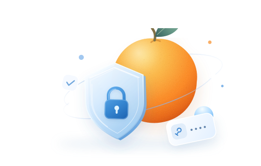

A LITTLE LESS TO REMEMBER把秘密，
把秘密，
收藏成一颗酸橙。
少一点记忆负担，多一点自在生活。

Small fruit. Big peace of mind.我的密码 06
让每一次登录，都变得轻松一点。
名称 / 账号分类状态
这里暂时还没有密码
试试其他关键词，或收藏你的第一枚密码。
只属于你的密码收藏6 个项目
从浏览器，到你的私人密码库。自动记住，一键填入，让酸橙陪你一起上网。
YOUR BROWSER'S LITTLE COMPANION
你的浏览器，多一份安心。
从记住密码到轻松登录，酸橙就在手边。
F Figma · 登录 ×＋
←→
figma.com/login
F
欢迎回来，创作者。
下一件好作品，就从这里开始。
示意网站 · 仅演示填写效果一颗酸橙已连接
figma.com匹配到 1 个账号
Figmalime@example.com
询问保存密码发现新账号时，显示一条温柔的提醒。
显示填充建议在登录表单旁，找到合适的账号。
A FRESH START FOR YOUR SECRETS
复杂一点，安心很多。
密码不用好记，足够特别就好。
新鲜出炉的密码FRESHLY SQUEEZED强密码
12 位40 位